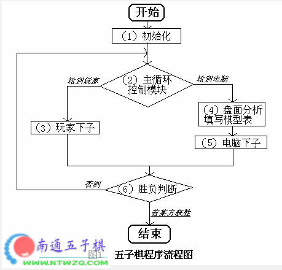

五子棋算法探讨
#1 五子棋算法探讨 作者：有志青年 发表时间：2006-3-30 20:53:37
近来随着计算机的快速发展，各种棋类游戏被纷纷请进了电脑，使得那些喜爱下棋，又常常苦于没有对手的棋迷们能随时过足棋瘾。而且这类软件个个水平颇高，大有与人脑分庭抗礼之势。其中战胜过国际象棋世界冠军-卡斯帕罗夫的“深蓝”便是最具说服力的代表；其它像围棋的“手淡”、象棋的“将族”等也以其优秀的人工智能深受棋迷喜爱；而我们今天将向大家介绍的是五子棋的算法。
当我们与电脑对战时，您知道这些软件是怎样象人脑一样进行思考的吗？前不久我曾编写过一个五子棋的游戏，在这里就以此为例和大家一起探讨探讨。
总的来说（我们假定您熟悉五子棋的基本规则），要让电脑知道该在哪一点下子，就要根据盘面的形势，为每一可能落子的点计算其重要程度，也就是当这子落下后会形成什么棋型（如：“冲四”、“活三”等），然后通览全盘选出最重要的一点，这便是最基本的算法。当然，仅靠当前盘面进行判断是远远不够的，这样下棋很容易掉进玩家设下的陷阱，因为它没有考虑以后的变化。所以在此基础上我们加入递归调用，即：在电脑中预测出今后几步的各种走法，以便作出最佳选择，这也是我们下棋时常说的“想了几步”。如此一来您的程序便具有一定的水平了。什么？不信！过来试试吧！
总体思路弄清之后，下面进行具体讨论：
一：数据结构
先来看看数据结构，我们需要哪些变量？
首先得为整个棋盘建立一张表格用以记录棋子信息，我们使用一个15*15的二维数组 Table[15][15] (15*15是五子棋棋盘的大小)，数组的每一个元素对应棋盘上的一个交叉点，用‘0’表示空位、‘1’代表己方的子、‘2’代表对方的子；这张表也是今后分析的基础。
在此之后还要为电脑和玩家双方各建立一张棋型表Computer[15][15][4]和Player[15][15][4]，用来存放棋型数据，就是刚才所说的重要程度，比如用‘20’代表“冲四”的点，用‘15’代表“活三”的点，那么在计算重要性时，就可以根据20>15得出前者比后者重要，下子时电脑便会自动选择“冲四”的点。那为什么棋型表要使用三维数组呢？因为棋盘上的每一个点都可以与横、竖、左斜、右斜四个方向的棋子构成不同的棋型，所以一个点总共有4个记录；这样做的另一个好处是可以轻易判断出复合棋型，例如：如果同一点上有2个‘15’就是双三、有一个‘15’和一个‘20’就是四三。
怎么样！3个数组构成了程序的基本数据骨架，今后只要再加入一些辅助变量便可以应付自如了。应该不会太难吧？OK！有了这么多有用的数据，我们就可以深入到程序的流程中去了。
二：程序流程
我们主要讨论五子棋的核心算法，即：人工智能部分，而其他像图形显示、键盘鼠标控制等，因较为简单，所以就不作过多介绍了。
首先，请仔细阅读图1：

我们看到本程序由六个基本功能模块构成，各模块的详细分析如下：
（1）初始化：首先，建立盘面数组Table[15][15]、对战双方的棋型表Computer[15][15][4]和Player[15][15][4]并将它们清零以备使用；然后初始化显示器、键盘、鼠等输入输出设备并在屏幕上画出棋盘。
（2）主循环控制模块：控制下棋顺序，当轮到某方下子时，负责将程序转到相应的模块中去，主要担当一个调度者的角色。
（3）玩家下子：当轮到玩家下时，您通过键盘或鼠标在棋盘上落子，程序会根据该点的位置，在Table[15][15]数组的相应地方记录‘2’，以表明该子是玩家下的。
（4）盘面分析填写棋型表：本程序核心模块之一，人工智能算法的根本依据！其具体实现方法如下：您在下五子棋时，一定会先根据棋盘上的情况，找出当前最重要的一些点位，如“活三”、“冲四”等；然后再在其中选择落子点。但是，电脑不会像人一样分析问题，要让它知道哪是“活三”、哪是“冲四”，就得在棋盘上逐点计算，一步一步的教它。
先来分析己方的棋型，我们从棋盘左上角出发，向右逐行搜索，当遇到一个空白点时，以它为中心向左挨个查找，如果遇到己方的子则记录然后继续，如果遇到对方的子、空白点或边界就停止查找。左边完成后再向右进行同样的操作；最后把左右两边的记录合并起来，得到的数据就是该点横向上的棋型，然后把棋型的编号填入到Computer[x][y][n]中就行了（x、y代表坐标，n=0、1、2、3分别代表横、竖、左斜、右斜四个方向）。而其他三个方向的棋型也可用同样的方法得到，当搜索完整张棋盘后，己方棋型表也就填写完毕了。然后再用同样的方法填写对方棋型表。
注意：所有棋型的编号都要事先定义好，越重要的号数越大！
OK! 怎么样？有点累了吧？不过千万别泄气！因为好戏还在后头。
Let‘s go！
（5）电脑下子：有了上面
#2 Re:五子棋算法探讨 作者：飞翔 发表时间：2006-4-1 9:42:36
有志大哥！ 你是不是想搞个比黑石更厉害的软件出来啊！